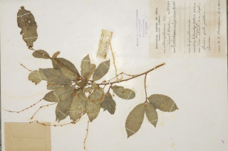
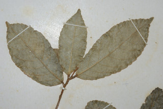

Images :



| Habit : | Trees 5 m tall. |
| Leaves : | Leaves simple , alternate , spiral ; stipules pinnatifid , caducous ; petiole to 0.7 cm long, terete , stout; lamina up to 18 x 5 cm, elliptic-oblong , apex acuminate , base acute to rounded , margin crenate with glands at crenatures , stellate hairy when young, later glabrous ; midrib raised above; secondary_nerves 8-12 pairs, gradually curved; tertiary_nerves obliquely_percurrent . |
| Inflorescence / Flower : | Flowers unisexual ; male flowers in clusters on elongated spikes ; female in short spikes . |
| Fruit and Seed : | Capsule 1.2 cm across, 3-2 valved ; seeds 3, subglobose . |